Токио · Сибуя · сауна
Shibuya SAUNAS: девять саун и два холодных бассейна в Сибуе
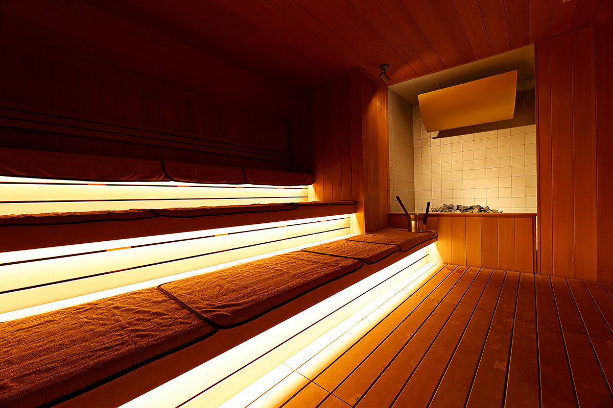
Сауна пришла в Японию из Финляндии в 1960-х и стала здесь своей. Shibuya SAUNAS, открытый в 2022 году, показывает, во что она выросла: девять парилок с разным характером в квартале, где раньше хорошей сауны было не найти.
Сауна
Японский путь финской бани
Японская культура купания, по преданию, началась с паровых бань в пещерах и менялась вместе со временем. Финская сауна попала в страну в 1960-х годах и прижилась. Японцы умеют брать чужое и делать его своим, поэтому сауны здесь не только становятся современнее: по всей стране появляются парилки с местным характером, каких нет в других странах.
Особенно ярко это видно в Shibuya SAUNAS, который открылся в 2022 году в Сибуе. Район любители сауны называли пустыней: хорошей парилки здесь не было. Общую концепцию придумал Кацуки Танака, автор манги «Са-до», которую японские любители сауны считают своей библией. В Shibuya SAUNAS нет бассейнов с горячей водой, только сауны, и в каждой видно то, что Танака узнал в Финляндии и Литве. Он продумал всё до мелочей: материалы, дизайн, звук и даже указатели, сделанные так, чтобы не отвлекать взгляд.
В Японии есть слово «тотоной»: так называют ясное и спокойное состояние, которое приходит после круга «парилка, холодная вода, отдых». Здесь его можно поймать девять раз, по числу саун.
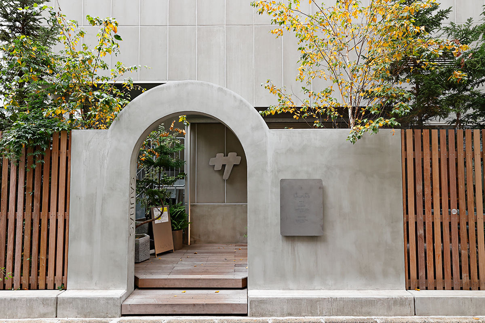
Комплекс разделён на две зоны: LÄMPI («пруд» по-фински) на востоке и WOODS («лес» по-английски) на западе. Мужчины и женщины меняются зонами по нечётным и чётным дням.
Восток
LÄMPI: звук, темнота и сон на полке
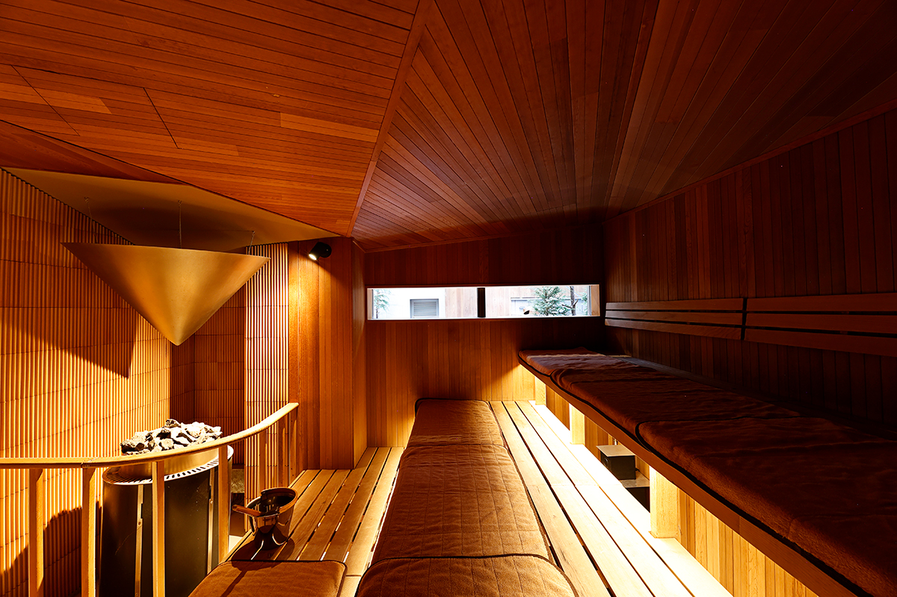
SOUND это сауна со звуком. Систему для неё разработали музыкант и компания WHITELIGHT: собственные динамики и конусный отражатель передают вибрацию музыки, которая меняется каждые 12 минут, вместе с жаром от поддачи. Здесь обещают, что «тотоной» приходит за 12 минут.
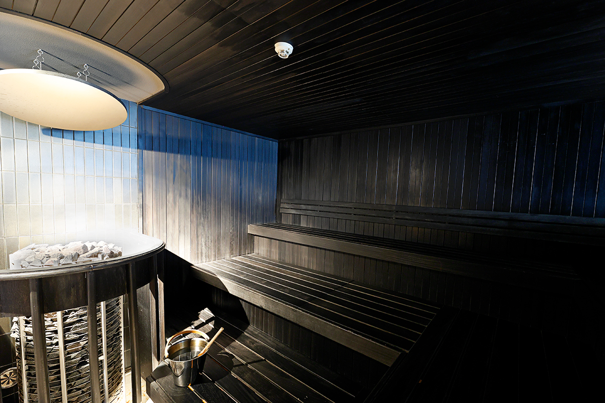
MUSTA, «чёрная» сауна на 14–15 человек, запоминается японскими деталями вроде традиционного решётчатого окна. Свет здесь приглушён, и камни можно поливать самому. В BED на скамейке ложатся во весь рост, а поддачу делает автоматика. Полки сделаны уступами, чтобы не задеть соседа, и ноги лежат чуть выше головы, поэтому расслабиться получается по-настоящему.
KELO есть в обеих зонах. Её стены обшиты кело, редкой древесиной финских сосен возрастом в несколько сотен лет, засохших прямо на корню. В сауне пахнет сладким деревом, и здесь же мастер веничного парения проводит сеансы по предварительной записи.
Запад
WOODS: чайная, веники и стадион
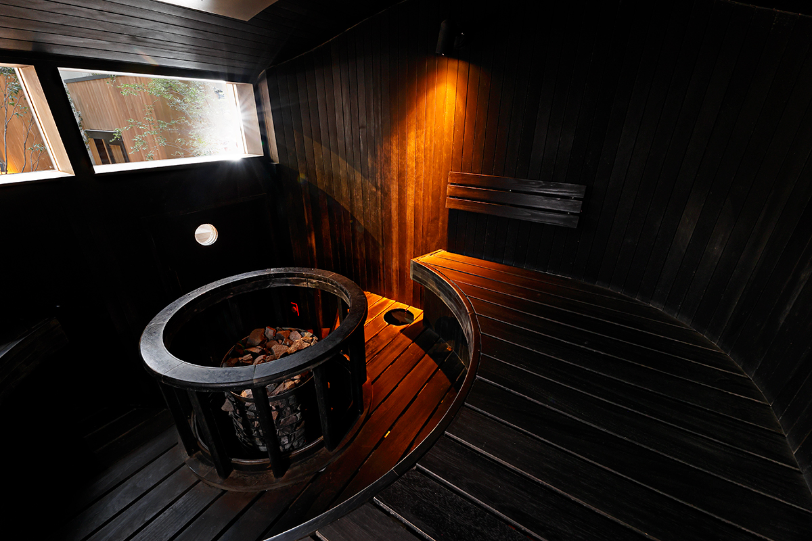
В TEETÄ низкий потолок, как в чайном домике. Гости сидят по-турецки вокруг печи и смотрят в маленькое окно, а поддают здесь чаем из кустарника куромодзи, и от его аромата на душе становится тихо. HARMAA, «серая» сауна на 12–13 человек, пахнет маслами, которые меняют каждый месяц. Сиденья в ней изломаны зигзагом, чтобы никто не задевал сидящего впереди.
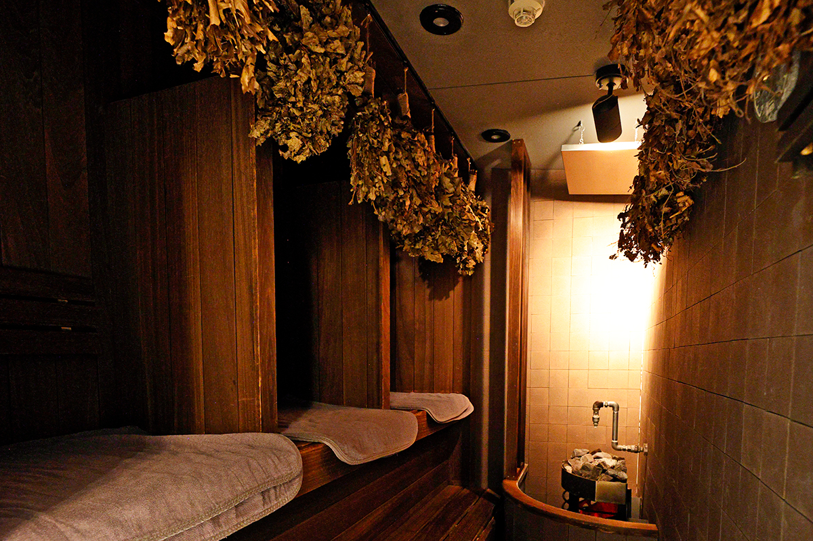
Вихта в Финляндии это берёзовый веник, которым хлещут по коже, чтобы разогнать кровь и сильнее пропотеть. В сауне VIHTA много зелени, а места разделены, поэтому здесь удобно медитировать в одиночестве. TUULI («ветер» по-фински) вмещает около 18 человек: это красивый зал-стадион, где дерево везде, от пола до потолка. Простор позволяет устраивать здесь аромапарение, на которое записываются в тот же день.
Холодная вода
Глубокий и мелкий
После парилки ждут два холодных бассейна с водой 15 °C. SYVÄ («глубокий») считается одним из самых глубоких в районе Канто: 150 см в LÄMPI и 140 см в WOODS. В мелком MATALA глубиной 40–60 см можно лечь и остудить даже голову. Отдыхают после этого в помещении или на открытом воздухе.
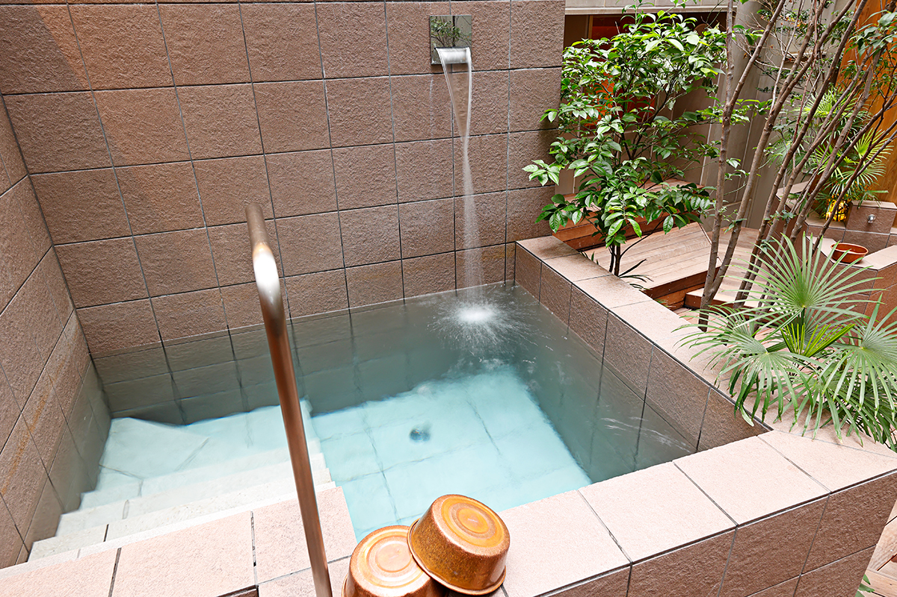
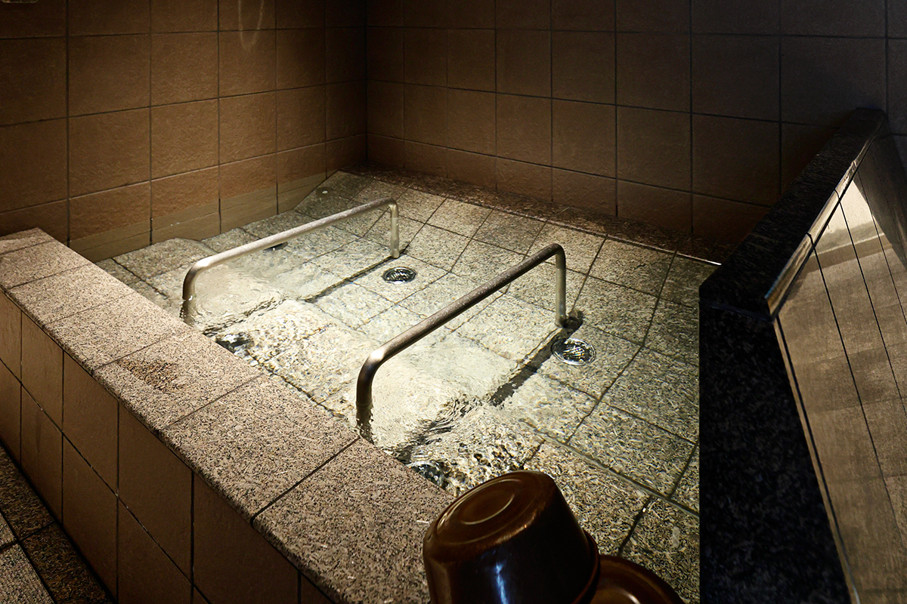
До и после
Работа, веники и растительная кухня
Shibuya SAUNAS задуман как городское место для медитации, где хорошо проводить время и до сауны, и после. Открытая рабочая зона на первом этаже и антресоли рассчитана на 45 мест за столами и стойкой, с розетками и Wi-Fi. После парилки голова ясная, и можно сразу сесть за работу прямо в банной одежде, а потом в любой момент вернуться в сауну. Одежду для гостей придумал бренд DIGAWEL, и она очень удобная. Для встреч есть платная переговорная на восемь человек с большим монитором, её бронируют заранее, и в ней удобно проводить и обычные, и онлайн-встречи.
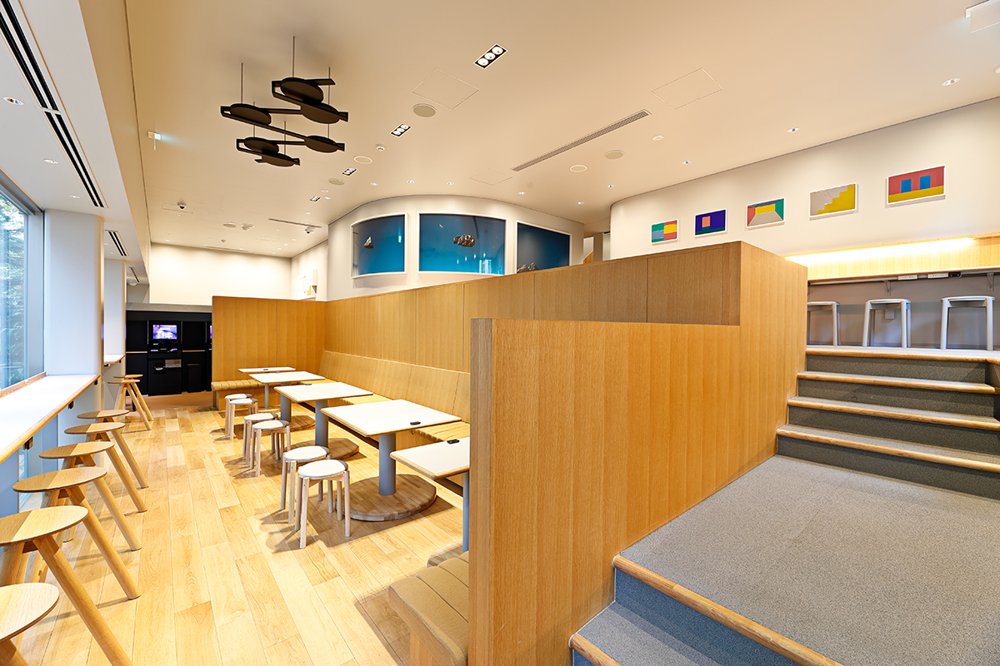
Веничное парение проводит мастер, который хорошо знает растения: он управляет жаром и влажностью и работает связками свежих ветвей. В 2024 году сеансы проходили в KELO каждый месяц по предварительной записи. По ощущениям это похоже на прогулку по лесу.
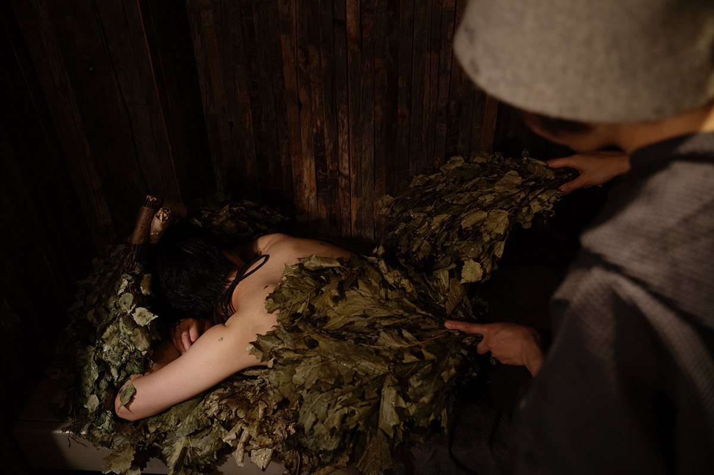
Аромапарение, ауфгус, пришло из Германии: мастер машет полотенцем, перемешивает горячий воздух и гонит волну жара на гостей. В 2024 году сеансы шли по понедельникам, средам, пятницам и воскресеньям, записаться можно было в тот же день. У каждого мастера своя музыка и свои ароматы.
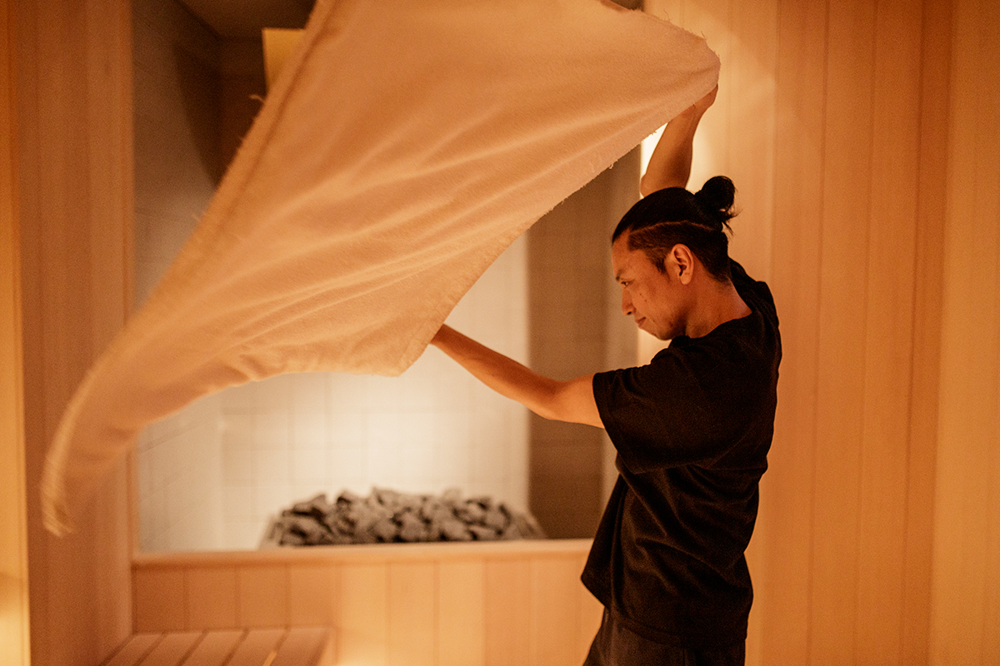
При комплексе работает ресторан с растительной кухней, меню для него составил «Сёдзин рёри Дайго», ресторан буддийской постной кухни, отмеченный гидом Мишлен. В 2024 году насыщенный рамен с жареным луком на соевом соусе стоил 1 320 иен, а напиток «Саунас оропо» без красителей и мёда 660 иен.
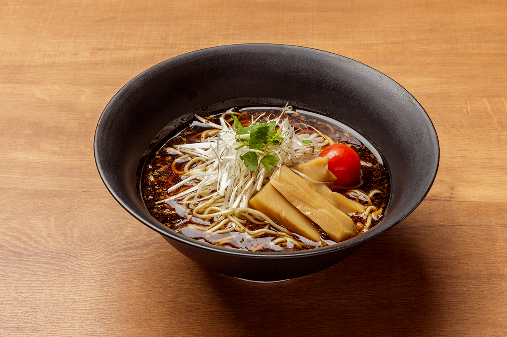
Зона WOODS по нечётным дням женская, по чётным мужская, LÄMPI наоборот. В саунах от 3 до 18 мест, температура 80–88 °C.
Shibuya SAUNAS
- Адрес
- Токио, Сибуя, Сакурагаока-тё, 18-9
- Часы работы
- сауны 8:00–24:00
- Выходные
- нерегулярно
- Цены / Вход
- 2 часа 30 минут 3 080 иен, в субботу, воскресенье, праздники и особые дни 3 850 иен, каждый следующий час 880 иен (доплата не больше 3 080 иен); утренний тариф (будни, 80 минут) 1 980 иен, вечерний тариф (будни, 60 минут) 1 980 иен
Фото: Норихито Судзуки.